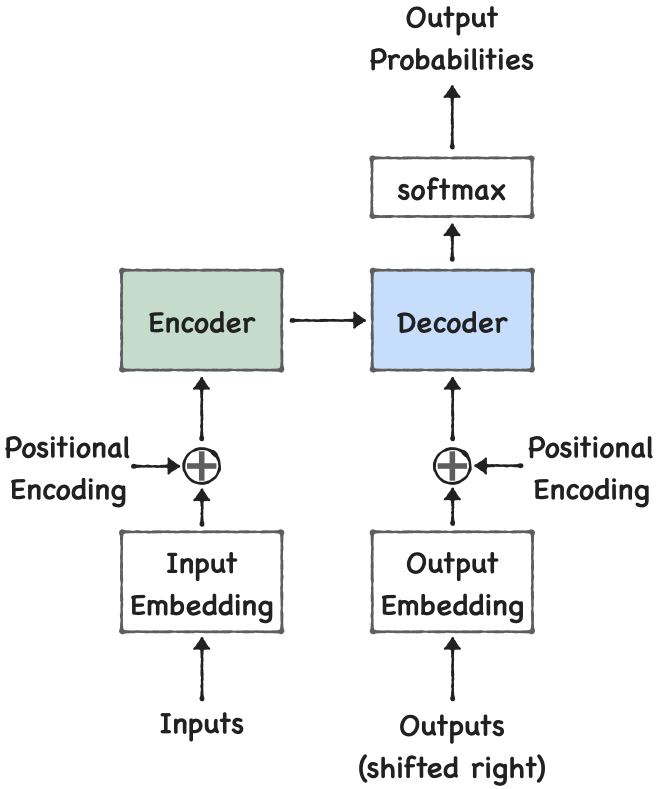

When I first started learning about LLMs, I kept hearing one word everywhere: Transformer. ChatGPT, Claude, LLaMA all are based on transformers. Almost every modern LLM traces its roots back to the Transformer architecture introduced in the paper Attention Is All You Need in 2017. At first, I assumed some time studying and implementing parts of it myself, I realized something interesting: The core idea behind transformers is surprisingly simple.
Before transformers, NLP models mainly relied on RNNs (Recurrent Neural Networks) and LSTMs. These models processed text one word at a time. Consider this sentence:
The food at the restaurant was amazing because it was prepared by an experienced chef.
To understand the word "it", the model needs information from earlier words in the sentence. RNNs try to maintain this information using a hidden state. The problem? As sentences become longer, important information can get diluted or lost. Imagine reading a 500-word paragraph and being forced to remember everything using only a single sticky note. That's essentially the challenge older architectures faced.
The breakthrough came from a simple observation. Humans don't process every word equally. When reading a sentence, we naturally focus on the words that matter. For example:
The animal didn't cross the road because it was too tired.
When we encounter the word "it", our brain immediately looks back and connects it to "animal". We don't give equal importance to every word. Transformers do something similar through a mechanism called attention. Instead of compressing everything into a single hidden state, each word can directly look at other words in the sequence. This allows the model to focus on relevant information whenever needed.

Transformers cannot process text directly. The sentence:
I love machine learning
must first be converted into tokens as ["I", "love", "machine", "learning"].
Each token is then mapped to a vector called an embedding. Instead of representing a word with a single number, embeddings represent it using hundreds or thousands of values. These embeddings capture semantic relationships between words. For example, words like: Cat, Dog, Puppy tend to have similar representations.
Transformers process all tokens simultaneously. While this makes them fast, it creates a new problem. How does the model know the order of words?
Consider:
Dog bites man
and
Dog bites man
Same words. Completely different meaning. To solve this, positional information is added to token embeddings. This allows the model to distinguish between words appearing at different positions. Think of it as attaching a seat number to every word. Now the model knows both: What the word is and Where the word appears
This is the heart of the transformer. Suppose we have:
The student submitted the assignment because he wanted a good grade.
When processing the word "he", the model should pay more attention to "student" than other words. Self-attention allows exactly this. Every token can look at every other token and decide how important it is. Instead of processing words independently, the model processes them in context. This is one of the main reasons transformers became so powerful.
When I first encountered Query, Key, and Value matrices, they seemed unnecessarily complicated. But a simple analogy helped. Imagine you're searching for a book in a library.
Query :What you're looking for.
Key :The labels attached to books.
Value :The actual content of the books.
The transformer compares queries with keys. The stronger the match, the more attention is given to the corresponding value. This process allows the model to determine which words are relevant to one another.
The attention score is computed using queries and keys. Conceptually: Similarity(Query, Key).
A higher similarity means a stronger relationship between two tokens. These scores are normalized using Softmax so that they become probabilities. The resulting weights determine how much information should be gathered from each token. This is how the model decides where to focus.
One attention mechanism is good. Multiple attention mechanisms are better. Instead of learning a single relationship between words, transformers use multiple attention heads. Each head can learn different patterns. For example:
Head 1 may learn grammar.
Head 2 may learn subject-verb relationships.
Head 3 may learn long-range dependencies.
Head 4 may focus on semantic meaning.
All these perspectives are combined together. This is known as Multi-Head Attention. It's similar to having multiple experts analyze the same sentence from different viewpoints.
After attention, the information passes through a small neural network. This component is called the Feed Forward Network (FFN). Its job is to further transform and refine the representations learned through attention. You can think of attention as gathering information and the FFN as processing that information. Both are equally important.
As transformer models become deeper, training becomes difficult. To solve this, transformers use:
Residual Connections: Residual connections help information flow through the network.
Layer Normalization: Layer normalization stabilizes training.
You can think of them as engineering tricks that make deep transformers practical to train. Without them, training large models would be significantly harder.
When people talk about GPT, LLaMA, Claude, or Gemini, they are essentially talking about large transformer-based models. The exact architectures may differ, but the core idea remains the same:
That's the foundation of modern language models.
When I first heard about transformers, I expected an impossibly complicated architecture. While the mathematical details can become quite involved, the central idea is surprisingly elegant:
Instead of forcing information through a sequential pipeline, allow every token to directly interact with every other token and learn which relationships matter.
If you're interested in exploring the implementation side, I've implemented many of these concepts in my KiteLLM project: Github